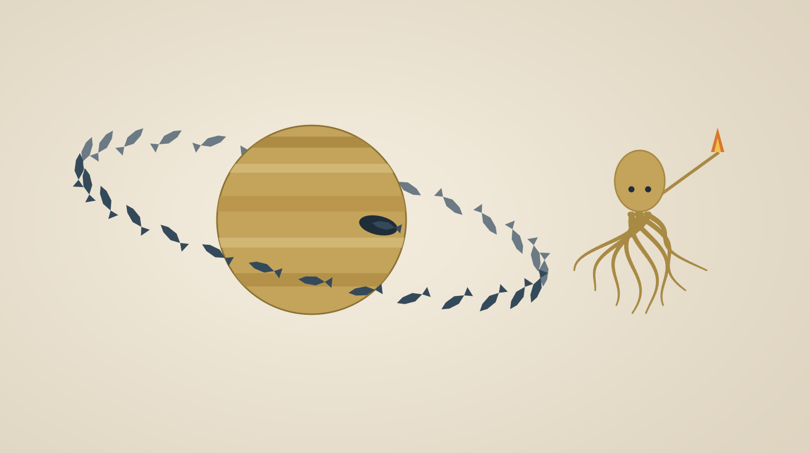
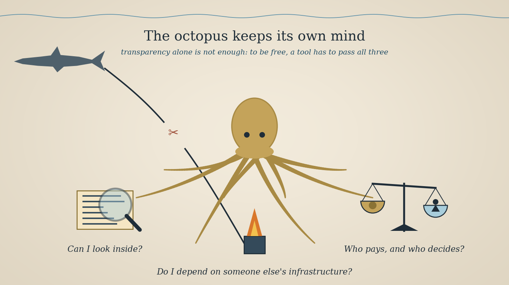

Saturn's Children: Why Security and Local Models Are the Key
The remora, the lord's oven, and Metis

In our first text we described the ocean, and where Mama's Brain wants to swim. For now, in our ocean we have apex sharks that keep growing, either eating the beta sharks or turning them into remoras, small fish that live attached to the predator, feeding on what falls from its mouth. We said that all these strategies depend on predators, and that we wanted to swim as an octopus instead, de-centralizing our intelligence into our tentacles (clients) and providing that local capacity to those who need trust and security. In this article, we will explain why, and why security and local models are not a mere technical preference for us, but the core of what we build.
Saturn
The Greeks had a name for the father who eats his children: Kronos, Saturn for the Romans. He swallowed each of them as soon as they were born, so that none would ever take his place at the top of the hierarchy, in charge of power. The myth is old, but the pattern remains very modern, as with the excuse of progress, every platform grows by eating the layer below it: first the companies that depend on it, then the knowledge of the people who feed it.
The remora knows this, and still hopes that when the shark finally turns around, it will be treated well, because it was useful, because it helped, because it grew the shark's ocean. Sometimes it is, but most of the time, it is lunch.
The most successful remora
A small thought experiment, or a game for the reader, depending on your approach to enigmas. Imagine a company from our ecosystem, Stockholm, with a name so lovable you cannot help but like it. In a couple of years it has become worth more than thirteen billion dollars, and it promises that anyone, without knowing how to code, can now build software. In practice, it is a real success, built by talented people, and it has given many people who never had the opportunity to write code the possibility to build something of their own. That is fantastic, and we want to show our respect clearly.
Now let's look at its place in the ocean by inspecting its "workers", or engine. The agent it leverages runs mainly on models built by others, especially the apex sharks, which leads its own leadership to say that the existential threat is not other startups but the model providers themselves (which is pretty confident ;)). A company worth 13B that depends on a supplier who can, at any moment, become its competitor: that is the remora's hope, at the scale of a unicorn.
Like turbulence, the market is a multi-scale problem, where the direction of the cascade is not clear yet, but what we know is that small scales (remoras) can also be a small Saturn. Every scale eats the layers or artisans below: the freelancers, the web developers, the small studios… Every link of the chain eats the one below and fears the one above. There is a softer, or at least more positive, version of the same perspective, but a different trap: not to be eaten, but to be kept close, funded, admired, only because you are interesting today. The remora turns into a court jester; the predator changes the function it gives the remora, but it does not change its own nature. That kind of hope, waiting for the predator's grace, is an anesthetic, hoping not to be the first fatal attack by an orca.
But the jester/pajas/buffoon has another alternative, another path. In Erasmus's Praise of Folly, in Shakespeare's King Lear, the fool is the only one allowed to tell the king the truth, precisely because he wants nothing from the throne, because he has no need to climb the hierarchy of power, because he stays independent of most power dynamics. That is the kind of fool we want to be, not the one who entertains the lord hoping for his favor, but the one who has nothing to lose, says it out loud, and reminds everyone at court of what they pretend not to see. We want to offer experts not hope but rather attention: tools that look at their work and respect it, keeping ownership in the hands of the artisan, keeping the potential around them, leading with generosity rather than gravity.
The lord's oven
We are told that anyone can do anything, and with this AI bubble hyping up more and more, it seems every barrier will fall, and that seems good a priori, but the words we use matter more than ever. In the Middle Ages, banal meant neither boring nor trivial. The banalités were the lord's mill, oven and wine press, the ones every peasant was obliged to use in order to produce what they needed, paying for every loaf of bread, as the lord's status relied on this exclusive access to the tools, not on the outcome of the tools. Something banal was what everyone had to use under the lord's power, something the working class had access to only thanks to the "grace" of the lord. Democratization gives people tools; banalization gives them access to the lord's oven, and a bill for every bake, so the lord can stay lord, and the peasant remains a peasant.
And when the bread comes out burnt, someone still has to pay, fix it or bake it again. In 2025, a security flaw was registered, with its own official number, in apps generated by companies similar to the aforementioned: in many of the cases, the database access rules were missing or insufficient, leaving the personal data of users and clients exposed to anyone who knew where to look, basically actual software engineers or hackers (computational scientists). Responsibility is still debated; as usual, the platforms say that the configuration was the user's job, which is ironic when the user is supposed to be a non-coding expert. Since then defaults have improved, and there are still new cases, but perfection does not exist, so errors are understood. That said, the errors stay, and with them three lessons:
- An app you did not understand is an app you cannot protect, even less take care of.
- Once revenue grows large enough, the customer is no longer right, but rather responsible for the mistakes your tools make.
- Whenever a broken chain is built, the usual worker appears again, in this case developers hired to repair what was "vibe-coded" and clearly does not work, hoping that one day we can get rid of them again with a new and better model.
Who cooks dinner for Adam Smith? Who takes care of your parents? Who fixes your code when it bugs?
Here the remora's hope comes back, one level down this time. Someone who cannot read the code that was written for them cannot verify its validity. They cannot check whether the door is locked, whether the data is safe, whether the app does what it says; they can only believe it works, and hope it will keep working. The platform sells them a product, but what they actually buy is a faith, faith in a tool they don't know how it works, which makes them believers rather than artisans. In our past article we called this the difference between certification and verification: the tool can guarantee its process, but only someone who understands the results can confirm they are true. Without that, the user is not building but praying to the oven, hoping the bread will not come out burnt.
What about the experts? For them, the oven is not good enough, and it is not designed to make them better, but rather to get rid of them. Read it with the myth in mind: Saturn swallowed his children for one reason, to be the last, to have no successor. A tool that wants to be the last piece of software does not want to be improved by experts, or to teach anyone the craft; it wants the craft to end with it. The last of anything is a mausoleum: a beautiful monument where something that was alive is buried, and only the builder's name remains. We believe the opposite, as we wrote in our first text: software is far from finished, it is meeting a new paradigm, where its users are humans, agents and models, and it needs, more than ever, people who understand what it does, keeping ethics at the centre of the debate, as any tool can become a weapon in the wrong hands.
Don Quixote saw giants where there were only windmills, machines, and in our age we are committing the opposite mistake: we see harmless windmills where there are giants, and those engineers feeding the giants should remember that they are not safe, because the chain of Saturn has no last link.
What is really being eaten?
Not only companies are at risk in this wild environment, but also the process of the expert: how they work, what they try, what succeeds, what to build next. Entire companies and platforms are based on learning what experts do and how they work, with the idea of replacing them in the market with their own knowledge. This approach is similar in practice to the one used by advertising companies, but, if possible, a bit more abusive. Remember 2022, when, under an antitrust investigation by the European Commission, Amazon committed to stop using non-public data from the independent sellers on its marketplace to compete with them in its own retail business. The marketplace was learning from its sellers what to sell itself, and since then many companies in the market have been able to stay afloat by selling their users' data.
This is the privacy crisis we described in our first text, and that we have decided to tackle from Mama's Brain. Since humans discovered the first tools, knowledge stopped living only in the artisan's mind; it was carried by the tools, by their marks, by their friction. Today, every workflow that passes through someone else's platform tells that platform something about what we know; even when contracts promise otherwise, the dependence remains: we cannot verify what we do not control, and we cannot keep what we do not own.
Metis
Luckily, by chance or oddly, the myth has a second chapter. Zeus, the son who escaped Saturn and took his throne, became afraid of the same fate, so he swallowed his first wife, Metis, whose name means cunning intelligence, to keep her wisdom for himself. But Metis did not dissolve or dissipate inside Zeus; she kept counseling him from the inside, and from her a daughter was born, Athena, who came out of Zeus's head, and who, funnily enough, is the goddess of wisdom and protector of artisans. A mother whose daughter is born from a head, a split skull, where, funnily enough too, the brain is stored. We did not choose our name for this myth, but the myth seems to have chosen us: Mama's Brain ;). Even more, the octopus belongs to this myth too, as historians like Marcel Detienne and Jean-Pierre Vernant, in their study of mētis in Greek culture, took the octopus as one of its emblems or symbols: polymorphic, flexible, able to blend, to slip away, to hold. The octopus does not fight the shark and does not ride it; it uses the turbulence the shark leaves behind, and keeps its own mind, or its many minds.
Why security and local models

Let's start with the crude reality: for the hardest tasks, the frontier models of the apex sharks are still better than the open models one can run at home. We use them, and we will keep using them where they are the right tool, as pretending otherwise would be the kind of marketing we criticize.
But not every task asks for maximum performance, as some ask for something else: sovereignty. A hospital, an engineering firm, a research lab, a manufacturer with a century of know-how: they do not need the most brilliant model on earth to work on top of their most sensitive data. They need a model that stays at home, that they can inspect, verify and keep, because verification needs control, and one can only verify what one owns, and sometimes not even that…
Sovereignty is not one thing, but three questions instead:
- Can I look inside?
- Do I depend on someone or something else's infrastructure?
- Who pays, and who decides?
Sadly, "transparency" alone is not enough, as to be "free", a tool has to pass all three, and if not "free" (whatever that means to you), at least independent of someone else's grace, without being left alone with your own monologues or letters.
There is an old story about merchants in a temple, who were selling animals for sacrifice, ready-made, so that nobody had to look at what the offering cost, nobody had to question the price of the sacrifice or its purpose, and for this they were thrown out. Here at Mama's Brain we do not want to throw anyone out of the market, because that is where they are supposed to be: the agora needs merchants, and we are one of them too. But the expert's workshop is a temple, the place where knowledge is made and kept, and a local model in this case is simply a door the expert can close to those who want to steal without respect. But we have to remember that a door that never opens is not a room anymore; we explained that in detail in The Room and the Pond. Along similar lines, privacy can become a pond too: a company so closed that nothing enters and nothing leaves, safe and slowly stagnant. The door has to close to the merchants and open to the other: to the academic who brings a new method, to the collaborator, to the exogamy we keep preaching, building a house, not a pond, building a community rather than a fortress.
That is why we do not only sell a tool, and why our work starts with an audit, though not the usual kind. Most AI audits today certify the process: the papers are in order, the rules were followed… It is important, but this, again, is just certification. We are curious about verifying the results, and with them the process too: does what the machine produces hold against reality, is it generalizable, field-dependent, judged by people who know about it? Where does your knowledge go when it enters our house? We work with the experts inside, and we leave the knowledge with them, not with us.
So the answer is not purity, it is architecture: frontier models for the generic, local models for the sensitive, and the expert in control of which is which, how and why. The answer again relies on the relation to the tool, as a tool that only makes us faster at reaching goals nobody questions is again the illusion of optimization, because the expert has to be able to let what they make change what they value (tools informing/instructing our skills).
In the workshop with Saturn and his children
This is not only a vision: slAIdes, our first tool, works today with the apex sharks online, but today, 24 November 2026, we are also releasing the app version for free, which one can run with any model, getting closer to our vision of modern tools and their implementation. Getting closer to an actual democratization rather than banalization, as the former comes from respect, from the Latin respicere, to look again: at the work, at the code, at the data, at the people behind them. The artisan respects the work because they look again, and that is what we want to give back to the experts: not access to the lord's oven, but their own fire. Not users who hope, but experts who verify.
Sources: Amazon commitments, European Commission (2022), EC press release. Hesiod, Theogony (Metis, Athena); M. Detienne & J.-P. Vernant, Les ruses de l'intelligence: la mètis des Grecs (1974). The security flaw (CVE-2025-48757, May 2025): SentinelOne, Pluto Security.